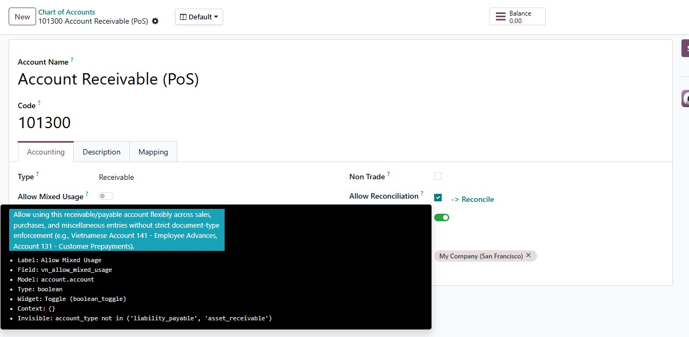
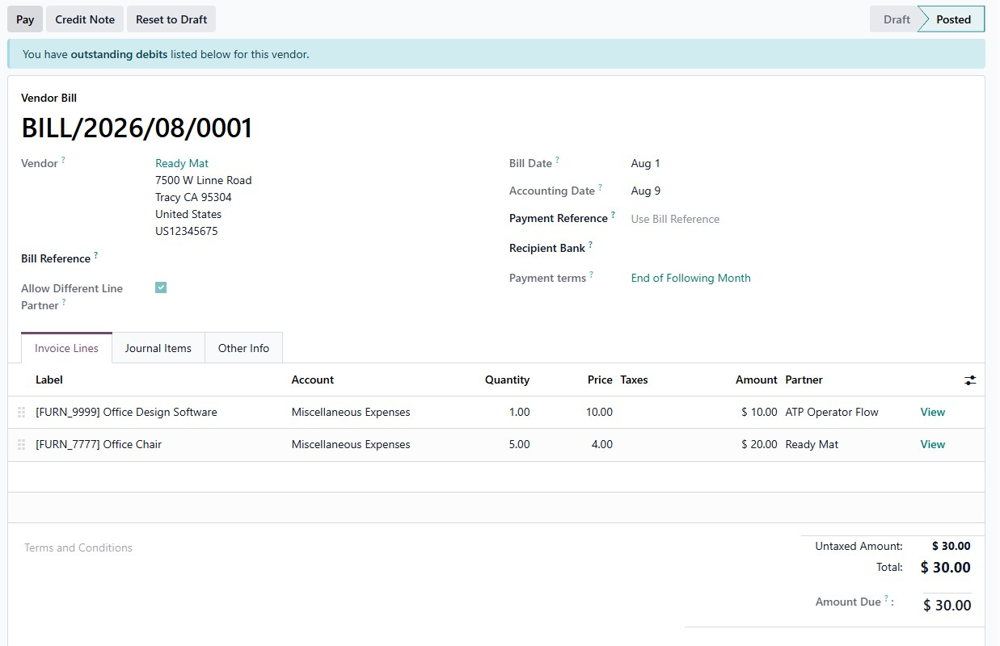

Designed specifically for Vietnamese accounting regulations (Circular 200/2014/TT-BTC) and flexible enterprise bookkeeping. This module lifts Odoo's rigid document-type constraints on designated receivable and payable accounts, enabling seamless employee advances (Account 141), multi-purpose customer deposits (131), and vendor clearing (331) while preserving 100% native reconciliation and partner ledgers.
Enables mixed usage on accounts without altering standard core constraints for non-flagged accounts.
Eliminate artificial accounting bottlenecks while maintaining rock-solid financial integrity and compliance.
Standard Odoo blocks receivable and payable accounts when used outside their matching document types (such as in miscellaneous operations or cross-ledger bills). Accounts with Allow Mixed Usage bypass this constraint cleanly and reliably.
Engineered through a surgical, non-destructive override on account.move.line._check_payable_receivable(). No monkey patches, no schema alterations, and zero risks to existing accounting business logic.
Transactions using mixed accounts retain complete support for Odoo's native reconciliation engine, aged partner balances, currency exchange gains/losses, and general ledger reports without any deviations.

Figure 1: Enable 'Allow Mixed Usage (VN)' on Account 141 in Chart of Accounts.
Enable flexible multi-journal usage with zero complexity. The Allow Mixed Usage toggle switch integrates seamlessly into the standard Chart of Accounts form view.
Eliminate forced partner synchronization. The dedicated Allow Different Line Partner toggle unlocks independent partner allocation on individual journal items during creation and draft editing.

Figure 2: Invoice lines with distinct partners enabled by the flexible partner toggle.
Set up in seconds and streamline your accounting operations without disrupting day-to-day work:
Open Accounting > Configuration > Chart of Accounts. Locate your account (e.g., 141, 131, 331) and toggle Allow Mixed Usage.
Create journal entries, vendor bills, customer invoices, or bank payments using the account across any required transaction types.
Click Post. The module filters out flagged accounts from the restrictive constraint, posting the entry without validation errors.
Match entries directly in Odoo's native reconciliation widget. Audit balances on General Ledger, Trial Balance, and Partner Ledgers.
Under Vietnamese Accounting Standard (VAS Circular 200), Account 141 tracks employee advances for travel, operational expenses, and procurement. Because advances require reconciliation against subsequent expense bills, Account 141 must behave as a receivable or payable account with partner tracking.
Allow Mixed Usage on Account 141. You can advance funds via bank/cash journals, enter expense settlements on vendor bills, and reconcile lines seamlessly against the employee's partner record.
In Vietnamese business practice, companies frequently maintain bidirectional relationships with partners who act as both buyers and suppliers. Furthermore, customer prepayments (131) and supplier advance deposits (331) often require mutual offsetting and multi-journal operations.
Allow Mixed Usage on the corresponding clearing accounts. Accountants can book direct contra-entries in General Journals and reconcile open items with zero artificial overhead.
Comparing Standard Odoo behavior against Odoo with Flexible Mixed Account Usage:
account (Standard Odoo Base)super()account.accountvn_allow_mixed_usage has tracking=Trueinvisible expressions and widgetsLooking for tailored Odoo 19 accounting localizations, e-invoicing integrations, VAS compliance reporting, or technical consulting? Feel free to reach out.